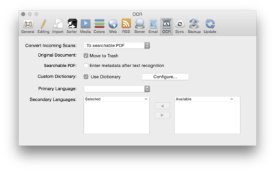

|
|
|
OCR |
|
 DEVONthink Pro Office contains an optical character recognition (OCR) module that allows you to import scanned documents and make them searchable. These documents are "read" by the embedded OCR engine and stored as PDF files that contain an additional (invisible) text layer with the recognized, computer-readable text. Use these options to fine tune the OCR process. You can import scanned documents, or scan them directly from within DEVONthink Pro Office. Incoming Scans Check Convert to searchable PDF to apply OCR to PDFs that have been sent from a known scanning software, e.g., ExactScan (full edition), CanoScan ToolBox, and others. The resulting file is a standard PDF containing the original image and a computer-readable text layer. Original Document Check Move to Trash if you want DEVONthink Pro Office to move the original documents to the trash after they have been successfully imported using OCR. If files are converted by OCR within the database, the original document is deleted from the database. If files are converted at import, the original document is moved to the Finder's trash. Using this option is a great way to prevent your incoming group/folder or database from growing cluttered after OCR has produced searchable PDFs. Searchable PDF Check Enter metadata after text recognition to make DEVONthink Pro Office show a metadata entry dialog whenever a PDF is imported using OCR. Use this dialog window to enter the preferred document name, the author of the document, and any keywords describing the document. You can also adjust the timestamp of the PDF to the actual date of the paper document. The dialog window is shown when OCR processing has been completed. When checked, the metadata entry dialog will appear whenever you scan a document or import an image file with OCR. You may want to switch this option off when you are scanning/importing multiple files in a batch.
Additional options:
Languages for OCR The Languages section of the OCR preferences lets you identify the languages of the documents you scan in. DEVONthink Pro Office's OCR engines uses this information to improve the accuracy of the text recognition. DEVONthink Pro Office comes with more than 150 different language dictionaries. Select the languages you intend to scan or import with OCR. Set a primary language and add one or more secondary languages using the pop-up menu . Simply select the languages you want to use from the list on the right ('Available') and move them to the left side ('Selected') using the right-to-left arrow button. To deactivate a selected secondary language, select it from the list on the left and move it to the right using the arrow button. You can select a maximum of four secondary languages. The primary language and the secondary languages are treated equally. |